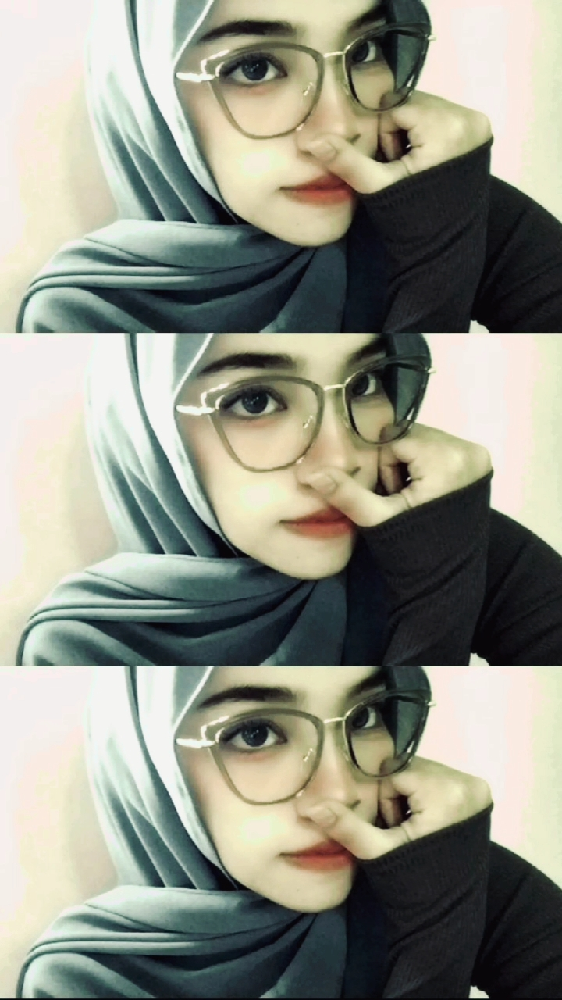

ABOUT
Hi Nama saya Silviani, Saya adalah salah satu Mahasiswi dari Kampus STMIK Dharma Negara dengan Prodi Teknik Informatika.
Saya seorang Mahasiswi yang baru akan Menginjak Semester 3 Tahun ini.
VISI
Menjadi ahli teknologi informasi yang inovatif dan berdedikasi dalam menciptakan solusi digital yang berkelanjutan, efisien, dan berdampak positif bagi masyarakat.
MISI
- Mengembangkan kemampuan teknis dan pengetahuan di bidang teknologi informasi melalui pembelajaran berkelanjutan dengan praktik langsung.
- Menciptakan dan mengimplementasikan solusi perangkat lunak yang inovatif dan sesuai dengan kebutuhan industri masyarakat.
- Berkontribusi pada pengembangan teknologi open source yang dapat diakses dan digunakan oleh banyak orang.